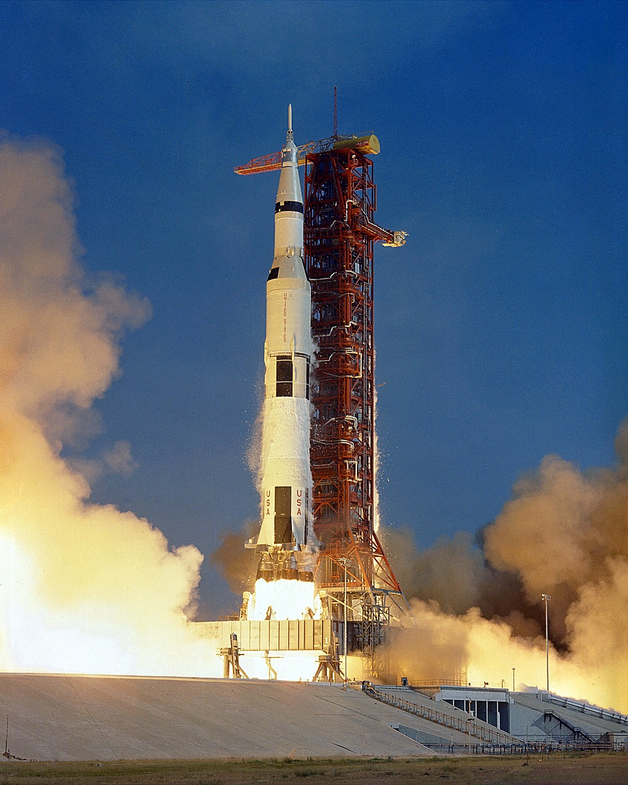

|
We are pleased to announce that we have entered the ESA Cansat competition. The competition involves making a miniature satellite within the dimensions of a drinks can. We have chosen to design our CanSat to carry out early exploration of an exoplanet. It could, however, also have applications on Earth. Our design centres around photogrammetry: taking photos of the surface of the Earth and building them into a 3D model. To allow us sufficient time for this on our descent, we will be manufacturing a parafoil. We are currently investigating using two-axis control of the parafoil to control our descent. We also plan to carry out the new and revolutionary aerogel particle capture. This uses a material called silica aerogel to obtain particles, which can then be analysed. |
 |